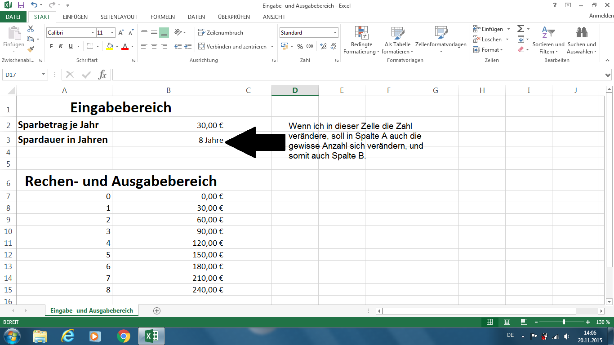

Welcome to wie kann ich 100 euro
Stückelung am Geldautomaten: So funktioniert das – Der Blog der Berliner Sparkasse
2020.12.10 08:18Top Treffer für „ “
Kein Treffer. Bitte überprüfen Sie Ihre Suche.
Nicht das, wonach Sie suchen?
Ihre Sparkasse
Finden Sie weitere Informationen bei Ihrer Sparkasse vor Ort.
Schliessen Service Gründer und Unternehmer Gut für Berlin Planspiel Börse Zur Startseite Service Gründer und Unternehmer Gut für Berlin Planspiel Börse Blog der Berliner SparkasseStückelung am Geldautomaten: So funktioniert das
eingestellt von Christian Seifert am 15. November 2018 | Kategorie: Service
Kann ich an den Automaten der Berliner Sparkasse die gewünschte Stückelung selbst vorgeben?
Unsere Geldautomaten sind mit 10-, 20- und 50-Euro-Scheinen sowie teilweise mit 5-, 100- oder 200-Euro-Scheinen ausgestattet. An allen unserer Auszahlautomaten können Sie die Stückelung bei einer Auszahlung selbst festlegen.
Wie können Sie die Stückelung bestimmen?
1. Stecken Sie Ihre Sparkassen-Card wie gewohnt in den Geldautomaten, wählen Sie die Funktion „Auszahlung“ aus.
2. Nun werden Sie aufgefordert, den gewünschten Betrag auszuwählen. Rechts unten wird Ihnen die Option „anderer Betrag & Notenauwahl“ angezeigt. Wünschen Sie eine bestimmte Stückelung, wählen Sie diese Option aus.
3. Geben Sie danach Ihren gewünschten Betrag ein. Sie haben anschließend die Wahl zwischen „Notenauswahl“ und „Betrag auszahlen“. Für eine individuelle Stückelung wählen Sie „Notenauswahl“ . Sie können auch ohne Betragsangabe direkt zu „Notenauswahl“ gehen.
4. Wenn Sie einen Betrag angegeben haben, bekommen Sie hier eine Stückelung vorgeschlagen. Diese können Sie über die Plus- und Minus-Tasten individuell anpassen . Wenn Sie „Notenauswahl“ ohne Betragsangabe gedrückt haben, können Sie Ihren Wunsch-Auszahlungsbetrag durch die Plus-Notenauswahltasten direkt selbst bestimmen. Bitte bestätigen Sie Ihre Wahl mit der grünen Taste.
5. Schließen Sie die Auszahlung durch die Angabe Ihrer Geheimzahl ab.
Schreibe einen Kommentar Antworten abbrechen
Kommentare
Horst Hinze schreibt am 29.09.2020 um 17:45 Uhr:
ich möchte 1000 euro abheben stückelung 100 euro, wie gehts?
Antwort vonChristian Seifert am 30.09.2020 um 09:20 Uhr:
Hallo Herr Hinze, das geht an all unseren Automaten, die 100-Euro-Scheine anbieten. Welche Scheine ein Automat enthält, erkennen Sie an dem Aufkleber in der rechten oberen Ecke des Geräts. Wenn das der Fall ist, einfach der Anleitung in diesem Artikel folgen.
Klenk schreibt am 19.09.2020 um 17:10 Uhr:
Hallo,
Warum gibt es keine Münzen Auszahlung am Geldautomat?
Antwort vonChristian Seifert am 21.09.2020 um 14:05 Uhr:
Hallo, wir haben sogenannte Münzrollengeber getestet, uns aus wirtschaftlichen und prozessualen Gründen gegen eine Einführung entschieden. Firmenkunden erhalten in unseren Filialen mit Sonderausstattung Münzgeldrollen. Diese finden Sie, wenn Sie in der Filailsuche das Ausstattungsmerkmal „Münzgeldannahme“ auswählen: https://www.berliner-sparkasse.de/de/home/service/filiale-finden.html?n=true#institute-search
Schultz schreibt am 23.05.2020 um 01:43 Uhr:
mit der Karte einer Fremdbank Notenauswahl funktioniert nicht!!!
Antwort vonChristian Seifert am 25.05.2020 um 06:53 Uhr:
Richtig, die Funktion steht ausschließlich Kundinnen und Kunden der Berliner Sparkasse zur Verfügung.
Hubert Wiegand schreibt am 17.03.2020 um 10:01 Uhr:
Danke für die gute, verständliche Anleitung. Ich wusste bisher nicht, wie die Stückelung eingegeben werden wird. Künftig wird meine Eingabe gut funktionieren.
Antwort vonChristian Seifert am 17.03.2020 um 16:20 Uhr:
Hallo Herr Wiegang, das freut uns sehr.
Maximillian Seefeld schreibt am 02.03.2020 um 10:07 Uhr:
Mich würde interessieren, aus höchstens wieviel Geldscheinen eine Stückelung bestehen darf.
Gruß
M. Seefeld
Antwort vonChristian Seifert am 02.03.2020 um 15:19 Uhr:
Hallo Herr Seefeld, die maximale Zahl an Geldscheinen hängt vom Gerät ab. Bei Auszahlungen, die die Anzahl überschreiten, erfolgt die Auszahlung in mehreren Tranchen.
Michel schreibt am 18.05.2019 um 01:11 Uhr:
Gute Erklärung, aber wo stehen Automaten, die größere Noten als 50€ haben?
Antwort vonChristian Seifert am 20.05.2019 um 10:49 Uhr:
Hallo Michel, am besten fragen Sie vor Ort in Ihrer Filiale, welcher Automat 100- oder 200-Euro-Scheine ausgibt.
Automat schreibt am 10.04.2019 um 15:14 Uhr:
Das wusste ich bisher noch gar nicht, das ist ja prima! Ich dachte immer, dass wäre so festgelegt bzw. nach Verfügbarkeit gestückelt. Muss ich mal ausprobieren. Ist praktisch, wenn man nicht jedes Brot mit nem Fünfziger bezahlen will oder nach dem Samstagseinkauf den Kindern noch nen Fünfer Taschengeld in die Hand drücken muss. Danke, super Tipp!
Meisinger schreibt am 01.04.2019 um 12:01 Uhr:
Hallo,
kann man einen Betrag zB 2000€ in 100 Zehner und 50 Zwanziger
vom Geldautomaten in einer Auszahlung abheben, oder sind mehrere
Abhebungen erforderlich.
frdl.Gruß
M.Meisinger
Antwort vonChristian Seifert am 01.04.2019 um 15:34 Uhr:
Hallo, als Kunde der Berliner Sparkasse können Sie an einem unserer Automaten bis zu 1.000 Euro am Tag abheben. Wenn Sie an einem Tag 2.000 Euro verfügen möchten, wenden Sie sich bitte an die Kolleginnen und Kollegen in einer Filiale oder besuchen Sie eine unserer Kassen.
Peter Haas schreibt am 18.03.2019 um 15:04 Uhr:
Eine ausgezeichnete Erklärung ! Besser als Alles was ich bisher gelesen habe. Und sogar besser als es mir von den Angestellten meiner Sparkasse erklärt wurde. Vielen Dank auch im Namen derer, denen ich es nun, mit Hilfe von Fotokopien Ihrer Eingaben, meinerseits erklären konnte. Frdl. Gruss ! P.Haas
Antwort vonTanya Zlateva am 18.03.2019 um 17:58 Uhr:
Hallo Herr Haas, vielen Dank für das positive Feedback. Es freut uns sehr, dass wir Ihnen helfen konnten. Viele Grüße und eine schöne Woche, Ihre Berliner Sparkasse
Schlagwörter
Altersvorsorge Apps Ausbildung Ausland Baufinanzierung Businessplan Börse Digitalisierung Ehrenamt Einfach Dein Kiez Existenzgründung Finanzbildung Finanzwissen Geldanlage Geldautomat Geschichte Gründer Gründerpreis Gut gegründet Immobilien Innovation JungbankerInnen Kiez Kreditkarte Kultur mobil Nachhaltigkeit oft gefragt Online-Banking Planspiel Börse pushTAN Rente Sicherheit soziales Engagement Sparen SparkassenCard Sport Start-up Stiftung Unternehmensnachfolge Unternehmer Veranstaltung Versicherung Wertpapiere ÜberweisungDie Berliner Sparkasse im Web
Internetfiliale Facebook Twitter YouTubeKontakt
030 869 869 69
info@berliner-sparkasse.de
Azubi-BloggerFabian Girschick
Planspiel Börse
Christian Seifert
Tanya Zlateva
Azubi-Blogger
Fabian Girschick
Planspiel Börse
Christian Seifert
Tanya Zlateva
Mehr anzeigen Weniger anzeigen Links Berliner Sparkasse Berliner Akzente Nutzungsbedingungen Erklärung zum Datenschutz Impressum dsd
